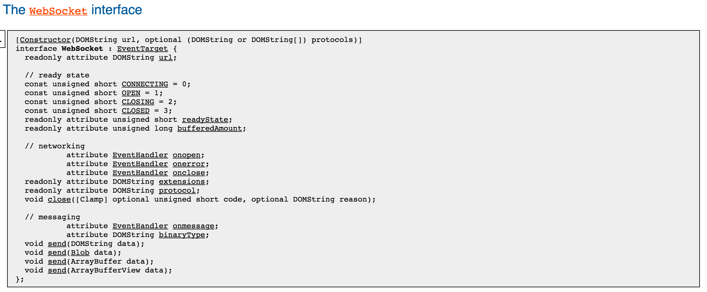

Webpack HMR: by @solodynamo
First Up : The Websocket API

- This specification defines an API that enables Web pages to use the WebSocket for two-way communication with a remote host.
Sock JS
- SockJS mimics the WebSockets API, but instead of WebSocket there is a SockJS Javascript object.
- Webpack-dev-server uses SockJS
Full Flow Of HMR
- Too overwhelming üòä , lets take it in steps !
Step 2: Webpack then tells webpack-dev-server about the changes.webpack-dev-server is not in core of webpack.
Step 7: The manifest file contains details about chunks that need to be uploaded to the browser. It’s file name looks like: b2e2d54372f42c1b2352.hot-update.json and it’s content looks like this: {“h”:”b3632c2a800d437e17df”,”c”:[0]}
Step 8: JSONP runtime then uses information contained inside the manifest file to load all the “Update” files and adds them to the DOM.
Updates call HMR runtime with the module id and the actual changes.
HMR runtime itself doesn’t know how to deal with the changes. So it delegates this job to corresponding loaders like react-hot-loader runtimes or style-loader runtimes to apply changes.